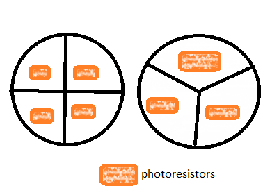
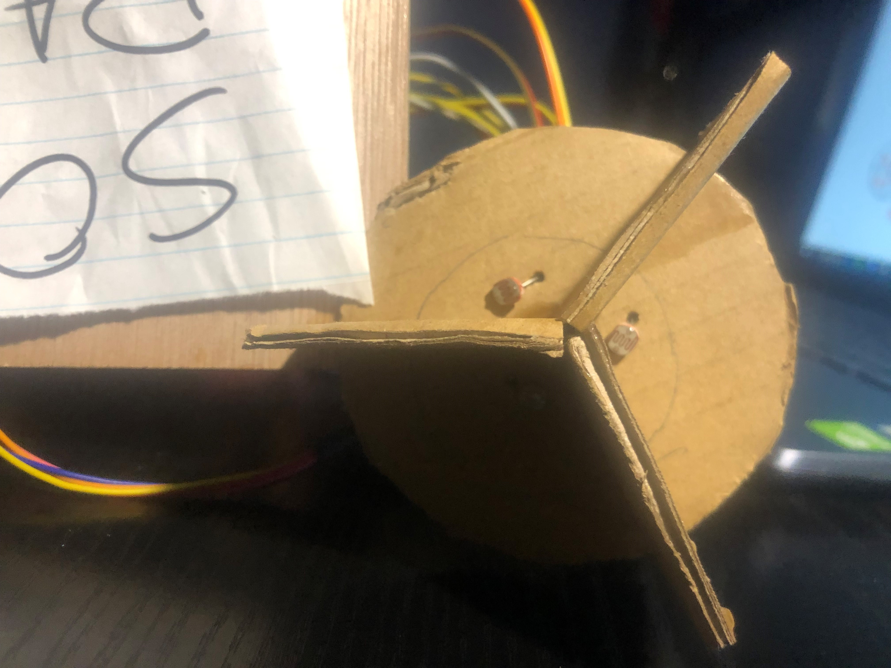
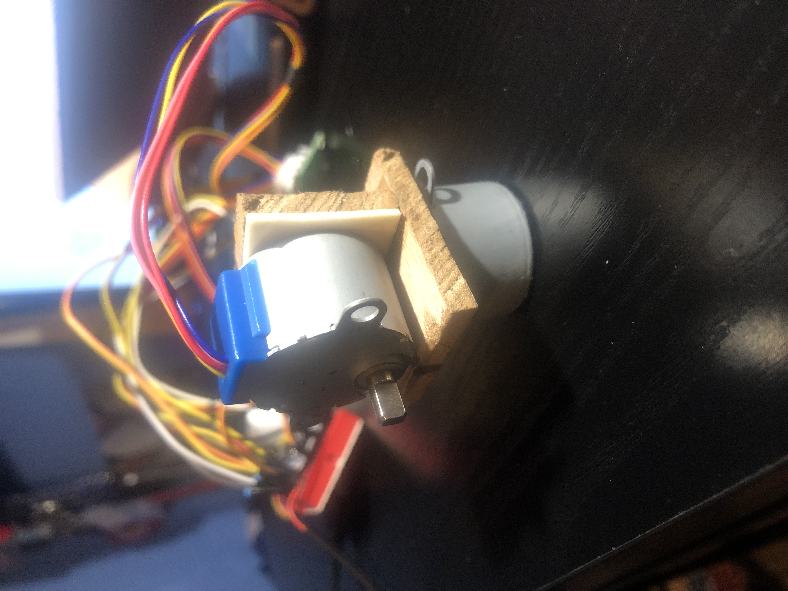
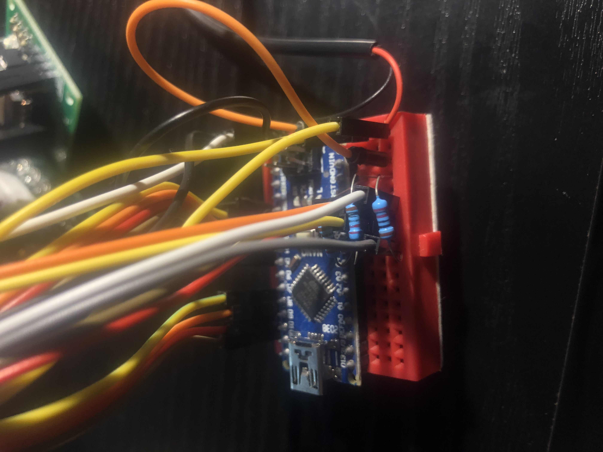

Solar Tracker
by Benjamin Miranda
It tracks the sun. It's as simple as that.
Ok it's a little more complicated than that. To get started, heres a list of what I used:
- An Arduino (Uno or Nano)
- 2x '28BYJ-45' servos and the 'ULN2003' driver board that comes with them
- 3-4x photoresistors
- 3-4x 220Ω resistors
- A bunch of jumper wires
- Cardboard or Thin Craft Wood or any other builfing material
- 5V source (not from Arduino)
This project would work great with a solar panel and a recharable battery of some sort, but I did not have any of that so I just worked with what I had.
The photoresistors really the heart of the porject. To 'track' the sun, the photoresistors are set up in an array with dividers in between them, so that the sun can hit one more then the other. The Arduino will read the data and decide what direction to move, to ensure all photoresistors will read similarlly, and therefore have the solar panel run at peak effiencey in direct sunlight. In my case, I only had 3 photoresistors, so I had to work with a less optimal soultuion.
 The next thing is to set up two stepper motor, one on top of the other, so that we can create 3D axis that can be used to rotate and pitch the solar panel based on the photoresistor inputs. I cut small pieces of wood and attached the top stepper motor using a sticky adhesive. Also (not shown here) the bottom stepper motor should be attached to something heavy like a brick to prevent the device from falling over.
There are four wires per stepper motor/driver (8 in total) that conect to the digital pins of the Arduino. The photoresistors are connected in serires with a resistor that is then connect to ground. The nodes in between the photoresistors and resitors are connected to analog pins, allowing the arduino the read the voltage difference, which changes based on the light level that the photoresistor experiences. The stepper motors/drivers are powered directly by the 5V source so that enough current can be drawn. This 5V source is also connected to the 'Vin' and 'GND' pins of the arduino so that everything can have one power source. The wiring may look a little messy, but I wanted it all to fit on one small breadbaord.
Here is another video of it working.